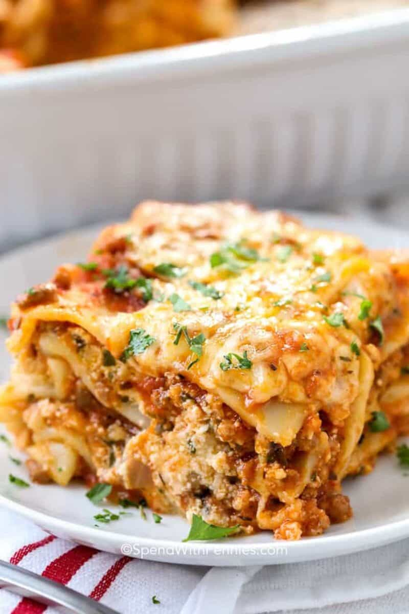

Lasagna Recipe
Lasagna, also known as lasagne, is a type of pasta, possibly one of the oldest types, made in very wide, flat sheets. In Italian cuisine it is made of stacked layers of pasta alternating with fillings such as ragù (ground meats and tomato sauce), béchamel sauce, vegetables, cheeses (which may include ricotta, mozzarella, and Parmesan), and seasonings and spices. The dish may be topped with grated cheese, which melts during baking. Typically cooked pasta is assembled with the other ingredients and then baked in an oven (al forno). The resulting baked pasta is cut into single-serving square or rectangular portions.
Ingredients
- 12 lasagna noodles
- 4 cups shredded mozzarella cheese
- 1/2 cup shredded Parmesan cheese
- 3/4 teaspoon salt
- 1/2 pound lean ground beef
- 1/2 pound Italian sausage
- 1 yellow onion diced
- 2 cloves garlic minced
- 36 ounces pasta sauce
- 2 tablespoons tomato paste
- 1 teaspoon Italian seasoning
- 2 cups ricotta cheese or cottage cheese
- 1/4 cup chopped fresh parsley
- 1 large egg beaten
Steps
- Preheat the oven to 350°F. Bring a large pot of salted water to a boil. Add the lasagna noodles and cook until al dente (firm) according to package directions. Drain, rinse under cold water, and set aside.
- Meanwhile, in a large skillet or Dutch oven, brown the beef, sausage, onion, and garlic over medium-high heat until no pink remains. Drain any fat.
- Stir in the pasta sauce, tomato paste, Italian seasoning, ½ teaspoon of salt, and ¼ teaspoon of black pepper. Simmer uncovered over medium heat for 5 minutes or until slightly thickened. Taste and season with additional salt if desired.
- In a separate medium bowl, combine 1 ½ cups mozzarella cheese, ¼ cup parmesan cheese, ricotta, parsley, egg, and ¼ teaspoon salt.
- Spread 1 cup of the meat sauce in a 9×13 pan or casserole dish. Top it with 3 lasagna noodles. Layer with ⅓ of the ricotta cheese mixture and 1 cup of meat sauce. Repeat twice more. Finish with 3 noodles topped with remaining sauce.
- Cover with foil and bake for 45 minutes.
- Remove the foil and sprinkle the top of the lasagna with the remaining 2 ½ cups mozzarella cheese and ¼ cup parmesan cheese. Bake uncovered for an additional 15 minutes or until browned and bubbly. Broil for 2-3 minutes if desired.
- Rest for at least 15 minutes before cutting.
Home